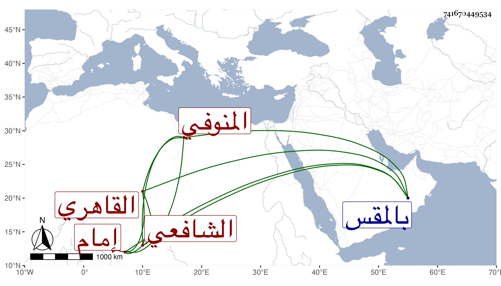

0902Sakhawi.DawLamic.ITO20230111-ara1.EIS1600.741670449534
Biography ID: 741670449534
65
محمد بن عبد الرزاق بن أحمد أبو الفضل المنوفي ثم القاهري الشافعي إمام جامع الزاهد بالمقس . نشأ فحفظ القرآن وغيره ، ولازم الشمس المسيري ثم ابن سولة والبدر حسن الأعرج وأبا حامد التلواني وغيرهم في الفقه والعربية وأخذ أيضا عن النور الكلبشي وقرأ على الديمي وكذا أكثر من القراءة علي وكتب القول البديع وغيره من مؤلفاتي ، وولي إمامة جامع الزاهد وخطب به وقرأ فيه الحديث ، وتكسب بالشهادة قليلا مع خير ومشاركة في الفقه . مات في ليلة الثلاثاء رابع عشري جمادى الأولى سنة تسعين ودفن من الغد وأظنه جاز الأربعين رحمه الله وإيانا .
